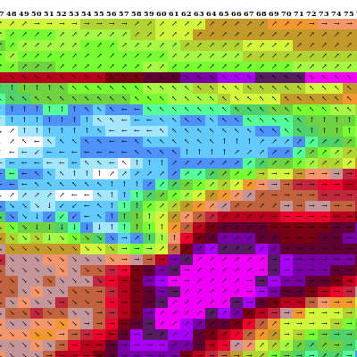
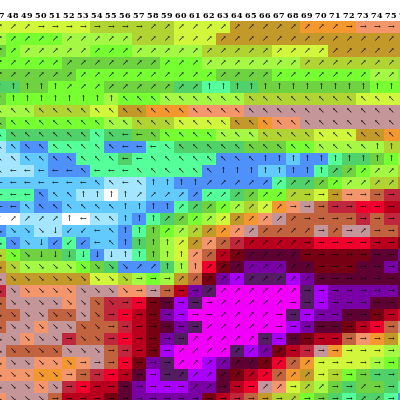

Dans le tutoriel sur le modèle barotrope, que nous avons implémenté sur une aire limitée, on a discuté de la manière de définir les conditions aux bords du domaine et de coupler avec un modèle global. J'ai expliqué rapidement la technique consistant à créer une zone de transition avec un coefficient alpha décroissant qui permet de faire un rappel progressif vers les valeurs que l'on souhaite imposer.
Au début, j'ai été peu regardant sur la largeur de la zone de transition. En partant sur une décroissance linéaire et une zone de transition de 4 points de grille, j'ai fin par m'apercevoir que c'était peu optimal. Rapidement, on remarque une discontinuité qui apparaît entre la zone de relaxation et le bord de la zone de simulation, qui créé des valeurs de vent et de tourbillon élevées. Sur des simulations assez courtes, cela ne pose pas de problème majeur, mais si l'on prolonge, cela peut compromettre la stabilité ou le réalisme du modèle. Voici le résultat au bout de 72 heures de simulation, on voit bien la ligne de vent fort en bordure de zone :

Zone de relaxation de 4, décroissance linéaire.
Il s'avère que ce problème de conditions aux limites a été étudié [1] : on apprend dans les articles scientifiques que de mauvaises conditions peuvent générer du bruit, en raison du rebond d'ondes sur les bords notamment. Il faut donc faire en sorte que la zone de relaxation se comporte comme un ressort qui amortit le flux qui rentre et sort du domaine (damping), tout en assurant la transition vers les valeurs imposées aux bords. La qualité du damping est impactée par la taille de la zone et par la manière dont le paramètre alpha décroit.
Une zone de 6 à 8 mailles est optimale, en dessous c'est pas assez, au-delà ça n'apporte rien. Une décroissance linéaire du paramètre alpha donne des résultats satisfaisants, mais une décroissance non linéaire est bien meilleure, en utilisant une fonction du type arc tangente. Quelle que soit la fonction utilisée, une zone de moins de 6 mailles produit l'effet de discontinuité illustré. Après modification, il suffit de constater la différence avec l'ancienne méthode, la discontinuité a disparu et la transition est plus douce :

Zone de relaxation de 8, fonction de décroissance arc tangente.
[1] Kallberg, 1977. Test of a lateral boundary relaxation scheme in a barotropic model.
Test de la condition aux limites
Nous avons déjà parlé de modèles à aire limitée, et précisé comment spécifier la condition limite latérale du domaine. Je vous propose de refaire un test fait par Kallberg afin d'illustrer les effets induits par une spécification rigide des données à la frontière, et l'intérêt d'une zone de relaxation.
Sur un domaine à aire limitée, qui est en fait un domaine ouvert, il faudrait idéalement laisser entrer et sortir les ondes librement. Une telle condition aux limites est assez complexe à mettre en oeuvre, car elle nécessite d'identifier les flux entrants et sortants pour les traiter différemment. C'est pourquoi il est plus simple de fournir les données aux frontières - on appelle cela la sur-spécification. Cela a malheureusement un effet délétère sur la simulation, en introduisant un bruit important qui grandit avec le temps. Cela limite la durée pratique du calcul sur aire limitée.
Le test
Le test fait par Kallberg consiste à créer un domaine avec un géopotentiel constant en tout point, et un vent nul. Sur les bords, ces valeurs restent donc imposées à ces valeurs de départ. Au centre, on créé une perturbation de géopotentiel en forme de bosse. On fait la simulation sans zone de relaxation, plus refaite avec. Le pas de temps est de 10s et la grille fait 40x40 cases de résolution 10km. Les résultats sont présentés ci-dessous, tout d'abord sans zone de relaxation.
Simulation de la perturbation de géopotentiel sans zone de relaxation. Chiffres x1000 mètres.
On voit que l'onde se propage vers l'extérieur, avant d'être réfléchie vers l'intérieur du domaine. Elle ne réussit pas vraiment à s'atténuer, même après 4h. Voyons ce qu'il se passe quand on a une zone de relaxation de 6 cases de large.
Même simulation avec la zone de relaxation.
Cette fois, l'onde se propage puis se retrouve amortie et absorbée sans aucune réflexion. L'onde disparaît quasi -complètement au bout d'un peu plus d'une heure de simulation.
Conclusion
On voit cette donc fois l'intérêt d'une bonne formulation de la condition aux limites pour éviter de polluer la simulation avec un bruit inutile. La stabilité du calcul s'en trouve donc améliorée sur des simulations de plus long terme.